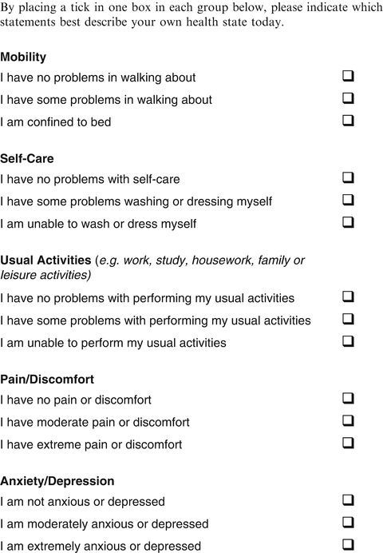
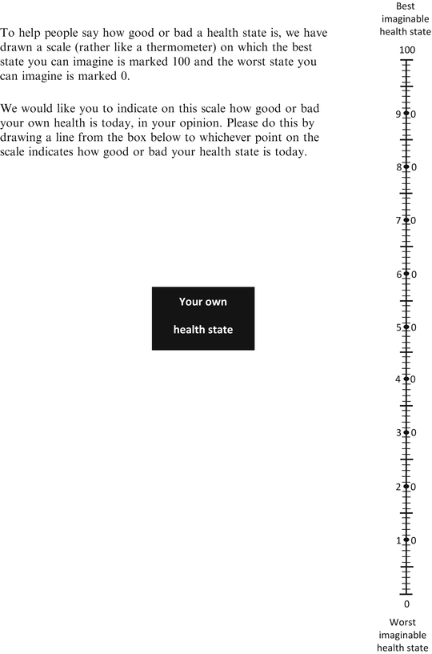

1.1 Purpose of This Book
During the 26 years since EQ-5D was first developed, a substantial amount of research has been carried out worldwide using the instrument. Among these studies were surveys conducted in various countries that measured the health-related quality of life of the general population. These studies have been informative in providing new data on population health characteristics, complementing the traditionally collected morbidity and mortality data.
The EuroQol Group is frequently asked to provide EQ-5D population reference data (sometimes called population norm data or simply population norms) for a specific country or international region. Such data can be used to compare profiles for patients with specific conditions with data for the average person in the general population in a similar age and/or gender group. Also the burden of disease in question can be compared to the general population’s health.
In response to the increasing need for EQ-5D population reference data, the EuroQol Group established the Self-Reported Health Task Force whose objectives were as follows:
- Updating the international EQ-5D general population database archive.
- Providing easy-to-use tables with population norm data for individual countries.
- Illustrating the potential use of EQ-5D data in population health studies.
- Providing a recommended format to present and analyse EQ-5D data collected from future surveys.
A first booklet summarised this work and presented population norms from population surveys conducted in 15 countries (Szende and Willimas 2004). The current book presents the population norms for 24 countries and some of their regions as well as results of some additional analyses of population health based on EQ-5D, including EQ-5D index norms.
The target audiences for this book are researchers using EQ-5D to collect data from patients or members of the general population and policy-makers using the collected information in health care decision-making. Readers wishing to learn more are encouraged to contact the EuroQol Group Executive Office (userinformationservice@euroqol.org).
1.2 EQ-5D
EQ-5D is a standardized health-related quality of life questionnaire developed by the EuroQol Group in order to provide a simple, generic measure of health for clinical and economic appraisal (EuroQol Group 1990). Applicable to a wide range of health conditions and treatments, it provides a simple descriptive profile, a self-report visual analogue scale and a single index value for health status that can be used in the clinical and economic evaluation of health care as well as in population health surveys (Fig. 1.1).


Fig. 1.1
EQ-5D-3L
EQ-5D is designed for self-completion by respondents and is suited for use in postal surveys, web-based applications, and in face-to-face interviews. It is cognitively undemanding, taking only a few minutes to complete. The instructions to respondents are included in the questionnaire.
The EQ-5D consists of 2 pages – the EQ-5D descriptive system (page 2) and the EQ VAS (page 3). The EQ-5D descriptive system comprises five dimensions: mobility, self-care, usual activities, pain/discomfort and anxiety/depression. The EQ-5D is available in three level and five level response options, EQ-5D-3L and EQ-5D-5L, respectively, and a youth version, EQ-5D-Y.
The EQ-5D-3L (EQ-5D 3 level) was introduced in 1990 and is available in more than 160 translated versions. Although the EQ-5D-3L was initially designed for self-completion in paper-and-pencil format, EQ-5D-3L data are currently also collected electronically by web or tablet versions, or by following a telephone interviewer script. Each dimension has three levels: no problems, some problems, severe problems/unable to. The respondent is asked to indicate his/her health state by ticking (or placing a cross) in the box against the most appropriate statement in each of the five dimensions. This decision results in a 1-digit number expressing the level selected for that dimension. The digits for the five dimensions can be combined in a 5-digit number (‘profile’) describing the respondent’s health state. It should be noted that the numerals 1–3 have no arithmetic properties and should not be used as a cardinal score.
The EQ VAS records the respondent’s self-rated health on a vertical, visual analogue scale where the endpoints are labelled ‘Best imaginable health state’ and ‘Worst imaginable health state’. This information can be used as a quantitative measure of health outcome as judged by the individual respondents.
The responses to the EQ-5D dimensions can be used to obtain a single index value (EQ-5D index) for all health states described by the 5-digit number. Given the five dimension and three-level response option format of the EQ-5D-3L questionnaire, there are 243 possible health states plus dead and unconscious. An index value is attached to each EQ-5D state according to a particular set of weights or value sets that measure health states on a scale anchored at 1 = full health and 0 = dead. Value sets (previously also referred to as “tariffs”) were based on representative samples of the general population (as opposed to patients) of a particular country or regions, and used a technique for valuing health states with the EQ-5D VAS rating scale or the Time Trade-Off technique. A distinction should be made between the EQ-VAS self-report question for measuring health outcome and the EQ-5D valuation questionnaire that is designed to collect valuations for health states defined by the EQ-5D descriptive system using the EQ-5D VAS rating scale.
The EQ-5D index values can be used in the estimations of Quality Adjusted Life Years (QALYs) as standard QALY calculations require valuations for all relevant health states on a scale anchored at 1 = full health and 0 = dead. While the EQ-5D index values (and QALYs based on it) are often used in economic evaluation to inform priority setting in health care, the EQ-5D index values are also useful as single index measures in clinical studies as well as in population health surveys.
After extensive research and preparation, the EuroQol Group launched the EQ-5D-5L self-complete version in 2009, with the aim of further improving the sensitivity and discriminatory power of the existing EQ-5D-3L version. The EQ-5D-5L (EQ-5D 5 level) is available in more than 100 translated versions. The EQ-5D-5L still consists of two pages – the EQ-5D-5L descriptive system (page 2) and the EQ visual Analogue scale (EQ VAS) (page 3). The descriptive system comprises the same five dimensions as the EQ-5D-3L. However, each dimension now has five levels: no problems, slight problems, moderate problems, severe problems, and extreme problems/unable.
The EQ-5D-Y (EQ-5D Youth version) is an EQ-5D-3L self complete version for children and adolescents aged 7–12. It is available in more than 25 languages.
All analyses and results in this book, however, are based on adult EQ-5D-3L and EQ VAS data.
1.3 The Structure of the Book
This book presents results from four main analyses of the international EQ-5D database.
Chapter 2 presents the data sources and methods of the book. General population surveys are accumulated from 24 countries (Table 2.1). Descriptive statistics are used to provide EQ-5D population norms by age and gender categories for EQ VAS, EQ-5D index values, and for the five dimensions. Correlations between country-specific EQ-5D data (EQ VAS and 5 dimensions) and country-specific economic and health system macro indicators are calculated in the cross-country analysis. Odds ratios and the health concentration index methodology are used in the socio-demographic analysis of EQ-5D data.
Chapter 3 presents the population norm data using EQ-5D for each country. EQ-5D norms are reported for EQ VAS and EQ-5D index values, and for self-reported problems on each of the five dimensions of the EQ-5D descriptive system, all classified by age and gender. These EQ-5D norms can be used as reference data to compare patients with specific conditions and to assess the burden of the disease in question.
Chapter 4 demonstrates that cross-country differences exist in EQ-5D outcomes after the population data is standardized for demographic differences. These cross-country differences in the general level of health are explained by looking at macro data on the economic and health system characteristics of each country. Results show that it is the prior living standards of a country that mostly explain cross-country differences in self-reported health.
Chapter 5 specifically addresses the distribution of health within the population and the degree to which age, gender, education level and country are responsible for inequalities in self-reported health. Usual activities and pain/discomfort were the highest contributors to overall inequalities in self-assessed health in most countries. Education had a consistent role in explaining a lower level of self-reported health. The level of inequalities in self-assessed health and the health inequality profile by EQ-5D dimension differed substantially across countries, deserving the attention of policy makers within each country.
Future population surveys using EQ-5D-3L or EQ-5D-5L may be integrated into the EuroQol archive of population survey datasets as they become available. Researchers planning to conduct new population surveys using EQ-5D should contact the EuroQol Group Executive Office (userinformationservice@euroqol.org).
Open Access This chapter is distributed under the terms of the Creative Commons Attribution Noncommercial License, which permits any noncommercial use, distribution, and reproduction in any medium, provided the original author(s) and source are credited.
References
EuroQol Group (1990) EuroQol – A new facility for the measurement of health-related quality of life. Health Policy 16:199–208CrossRef
Szende A (Editor) and Williams A (Editor) (2004) Measuring Self-Reported Population Health: An International Perspective based on EQ-5D. EuroQol Group.